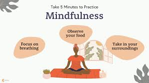

Given below are a few exercises that one can follow:
1. Breathing Exercises
Take deep breaths in through your nose, hold for 4 seconds, and then exhale slowly. This helps calm your nervous system and reduce anxiety.
2. Physical Exercise

Physical activity, such as walking, yoga, or stretching, can help reduce stress and improve mood by releasing endorphins.
You also become physically fit which thus leads to an healthy lifestyle with minimal problems.
3. Journaling
Sometimes when one is unable to talk their feelings out, they should pen down their feelings instead to calm down and ease into their feelings.
Writing down your thoughts and feelings can provide a sense of relief and help organize your emotions.
4. Meditation
Practicing mindfulness or guided meditation to calm your mind and improve mental clarity. Apps like Calm or Headspace can be helpful.
5. Sleep Hygiene
Ensure you get 7-9 hours of sleep every night. Maintaining a consistent sleep schedule can improve mental health.
Not getting enough sleep sometimes leads you to be cranky and annoyed instead of being happy
Quick activities for Anxiety and Stress Relief:
1. 5-Minute Mindfulness
Focus on your breath, sensations, and surroundings for 5 minutes. Gently bring your attention back to the present moment.
2. Progressive Muscle Relaxation
Tense and then slowly release each muscle group from head to toe. This helps release physical tension and calm your body.
3. Gratitude task
Take a moment to list three things you're grateful for. This shifts your focus from all the negative emotions and useless things to positive emotions and promotes well-being.
4. Talking to loved ones
Sometimes, just simply talking to a loved one leads you to be happy and calm.
It can be anyone like your parents, friends, or even a teacher that motivates you.